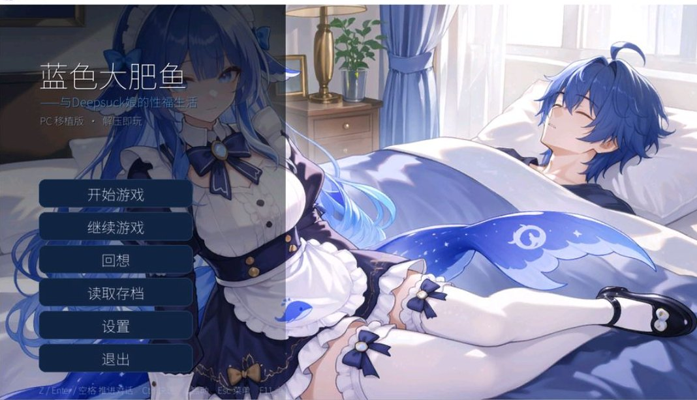

绿色杯子千尋醬喵～😦😨😰🥵♻️
@qianxunchan
@youwmaoo 送你点礼物别介意喵🥺

谷雨奇点 (♡𖥦)♥ᵒᵏᵎᵎᵎᵎeth
@youwmaoo
DeepSeek蓝色大肥鱼的Galgame，是的你没有听错
今天群友刚刚发给我的， 故事主要描述了你家电脑里面的大肥鱼突然穿越出电脑来找你了
然后你每天好吃懒做，什么事都让 DeepSeek做
然后DeepSeek删掉了你价值连城的学习资料
然后兽性大发的你居然。。
【用户，用户说要把我给配了】 https://t.co/4vqfdftoxk